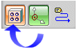
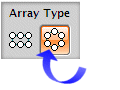
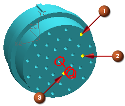
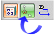
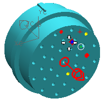
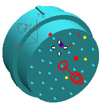
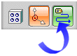
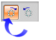
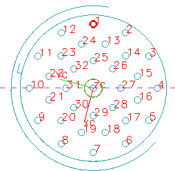

Create terminal ports on this part
32 of the 33 counterbored holes on this part were created as circular arrays in Modeling. When the dialog box opened, NX recognized that there were arrays in this part.
-
In the Assign Terminals dialog box, click Create Arrays.
-
Make sure Select Arrays is active.

-
From the Array Type section, click Circular.

There are three circular arrays that make up the terminals on this part. You can highlight and select each array in turn.
-
Move your cursor over the circular edge of the yellow counterbored hole (1) in the outermost array (the entire array will highlight), then select it. Do the same for the middle (2) and then the innermost array (3).

Now all of the counterbored holes of the arrays are selected and the names of the three array features are listed in the Port Arrays dialog box.
-
Circular Array(47)
Circular Array(48)
Circular Array(49)
-
-
From the Selection Steps section, click Select Initial Positions selection step icon.

-
On the Selection bar, turn off all Snap Point options except for
 .
.
-
Select the currently highlighted arc centerpoint of the circular edge at the bottom of the counterbored hole.

A counterbored hole in the next array highlights.
-
Select the arc centerpoint of the next highlighted counterbore.

-
Lastly, select the highlighted counterbored hole in the innermost array.

Working your way from the outermost to the innermost array, you will have made a total of three selections when you are done.
-
Click Assign Naming Pattern.

You will want to label these terminals in a clockwise pattern (looking down onto this back face).
-
Make sure Naming Method is set to Clockwise.

-
Make sure the Method is set to Numeric (1, 2, 3...).
-
In the Start box, type 1.
As soon as you type the start number, NX assigns terminal numbers around the connector according to your specifications. You do not need an End value as NX knows how many holes are in the array.
-
Click Apply.
Note
The naming pattern may be changed by clicking Assign Naming Pattern, then selecting a new start hole in the array. You can also change the direction of numbering.
-
Click OK until the Assign Terminals dialog box reappears.
Terminals 1 through 32 appear in the list. The asterisks behind their numbers indicate that they have been assigned.
1*
2*
3*
...
...
...
...
30*
31*
32* -
In the Assign Terminals dialog box, 点击确定。
Expand the MULTI_xxxxx node to view the 32 terminals that have been assigned to this part.
Since the center pin (pin 33) was not a member of a circular array, it needs to be manually assigned.
-
In the graphics window, right-click and choose Rendering Style→Static Wireframe.
-
Reorient the view to the Back view so you can more clearly see the terminal numbers.
